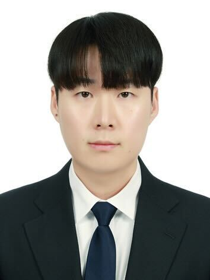

I am a Postdoctoral Researcher at the Hydrogen Energy Research Center, KRICT, working on selective membrane design for anion exchange membrane water electrolysis. Previously, I completed my Ph.D. and Postdoctoral Fellowship at KAIST under Prof. Dong-Yeun Koh in the Membranes, Materials, Machine Intelligence Laboratory (MMML), where I focused on polymer membranes for organic solvent nanofiltration and complex mixture separations.
Ph.D. in Chemical & Biomolecular Engineering
Dissertation: Separation and Fractionation of Organic Solvent-Based Mixtures with Polymer Nanofiltration Membranes. Advisor: Prof. Dong-Yeun Koh, MMML.
M.S. in Chemical & Biomolecular Engineering
Advisor: Prof. Dong-Yeun Koh, MMML.
B.S. in Chemical & Biomolecular Engineering
Membrane-based Separation & Transport
- Ion transport and selectivity in anion exchange membranes
- Organic solvent nanofiltration for complex molecular separation
Membrane Material Development
- Thin-film composite and copolymer membranes with tunable functionality
- Polymer synthesis and modification for ion-selective membranes
- Organic-inorganic hybrid systems for enhanced selectivity and stability
Fabrication & Interface Engineering
- Initiated chemical vapor deposition (iCVD) for ultrathin polymer films
- Tailoring nanoporosity and surface chemistry for targeted molecular transport
Postdoctoral Researcher
Designing selective membrane layers to suppress hydrazine crossover in anion exchange membrane water electrolysis, enabling efficient oxygen evolution.
Postdoctoral Researcher
Developed novel polymer membranes for energy-efficient, room-temperature separation of challenging complex mixtures. Advisor: Prof. Dong-Yeun Koh, Membranes, Materials, Machine Intelligence Laboratory (MMML).
† Co-first author
MANUSCRIPTS UNDER REVIEW
-
Selective Crude Oil Fractionation via Dynamic Deposition on Mesopores
PEER-REVIEWED JOURNAL ARTICLES